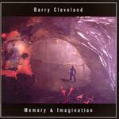

| Artist: | Barry Cleveland |
| Title: | Memory And Imagination |
| Label: | Supersaturated RBR001-03 |
| Length(s): | 63 & 58 minutes |
| Year(s) of release: | 2003 |
| Month of review: | [02/2004] |
| 1) | Voluntary Dreaming | 7.15 |
| 2) | Ritual Sticks | 5.53 |
| 3) | Visual Purple | 2.26 |
| 4) | The Inward Spiral | 3.13 |
| 5) | Cleopatra's Needle | 2.34 |
| 6) | Hawk Dreaming | 4.33 |
| 7) | Aeon | 5.00 |
| 8) | Abrasax | 7.05 |
| 9) | Mythos 19.10@15:00 | |
| 10) | Voluntary Dreaming Alt Mix | 7.15 |
Disc 2
| 1) | Still Smiling | 3.13 |
| 2) | Signless | 3.25 |
| 3) | Snakey Jake | 4.05 |
| 4) | Bottoms Up | 3.23 |
| 5) | Lucid Mirrors Of Eroticism | 3.17 |
| 6) | Memory & Imagination | 24.24 |
| 7) | Echoes On Echoes | 4.57 |
| 8) | Stones Of Precious Water | 5.21 |
| 9) | Indigo Runes | 5.51 |